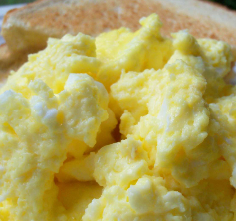

- Chop potatoes into quarters
- Simmer in salted water for 15-20 minutes until tender
- Heat milk, butter and nutmeg
- Drain potatoes and mash
- Mix in the milk mixture
List menu
- Mousses
- Pastries
- Croissant
- Mille-feuille
- Palmier
- Profiterole
- Tarts
- Sashimi
- Sliced raw fish that is served with condiments such as shredded daikon radish or ginger root, wasabi and soy sauce
- Scale
- A device used to accurately measure the weight of ingredients
- A technique by which the scales are removed from the skin of a fish
- Scamorze
- Scamorzo
- An Italian cheese usually made from whole cow's milk (although it was traditionally made from buffalo milk)
Subject list
- HTML
- Hyper Text Markup Language
- SQL
- Database Management SQL sever
Scrambled Eggs
Eggs are one of my favorite foods. Here is a recipe for deliciously rich scrambled eggs.
Ingredients
- 2 eggs
- 1tbs butter
- 2tbs cream
Method
- Melt butter in a frying pan over a medium heat
- Gently mix the eggs and cream in a bowl
- Once butter has melted add cream and eggs
- Using a spatula fold the eggs from the edge of the pan to the center every 20 seconds (as if you are making an omelette)
- When the eggs are still moist remove from the heat (it will continue to cook on the plate until served)
Scrambled Eggs
Eggs are one of my favorite foods. Here is a recipe for deliciously rich scrambled eggs.

Ingredients
2 eggs
1tbs butter
2tbs cream
Method
- Melt butter in a frying pan over a medium heat
- Gently mix the eggs and cream in a bowl
- Once butter has melted add cream and eggs
- Using a spatula fold the eggs from the edge of the pan to the center every 20 seconds (as if you are making an omelette)
- When the eggs are still moist remove from the heat (it will continue to cook on the plate until served)